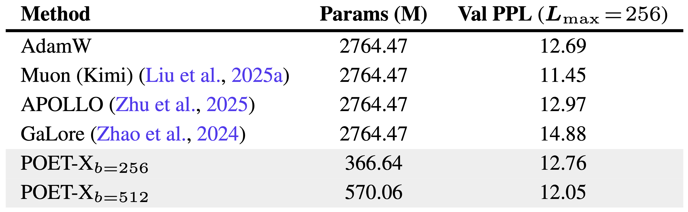
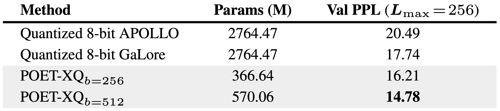
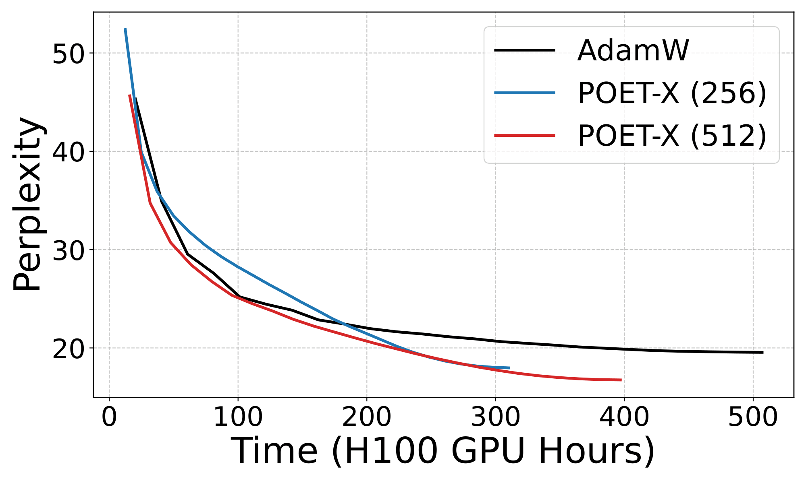
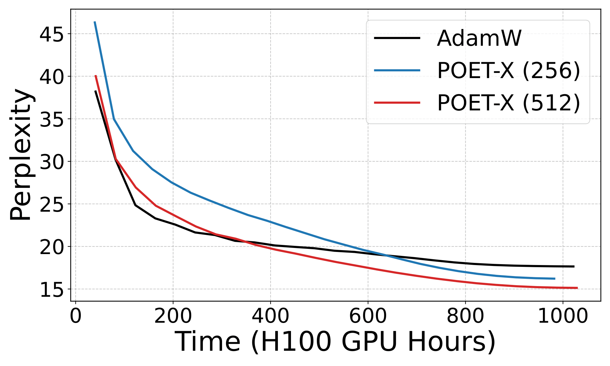
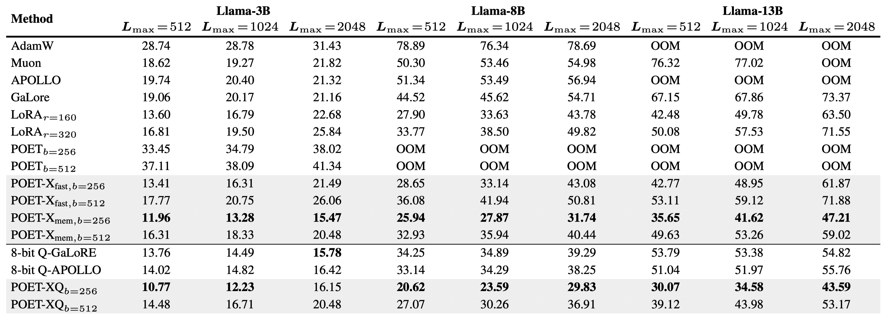
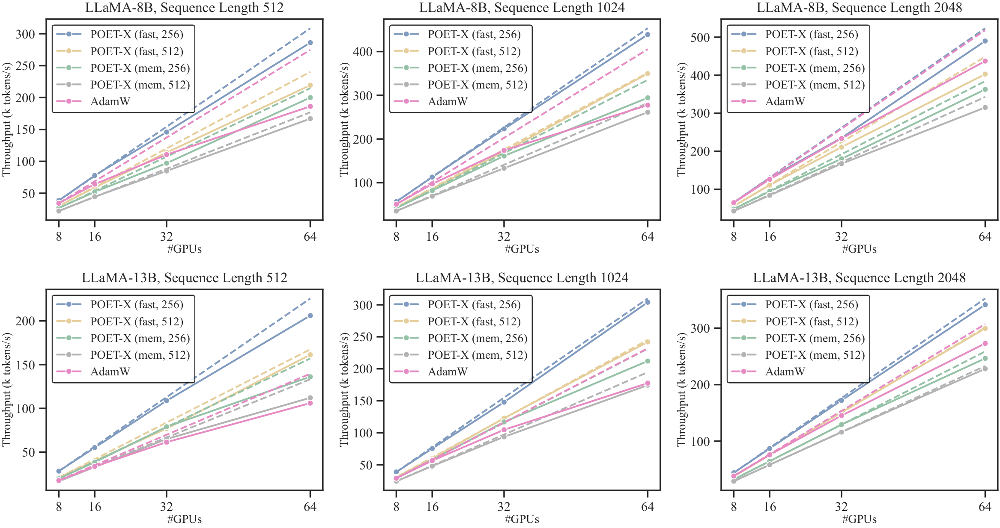
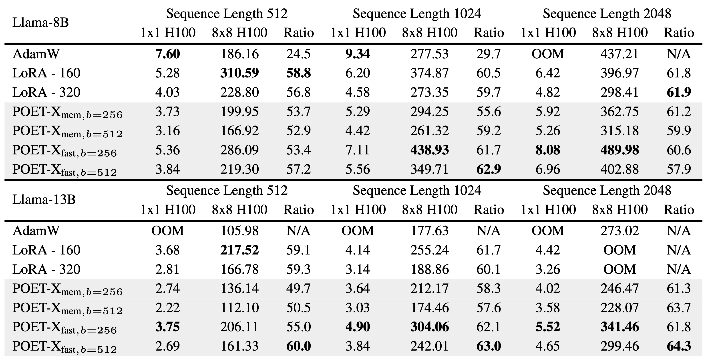
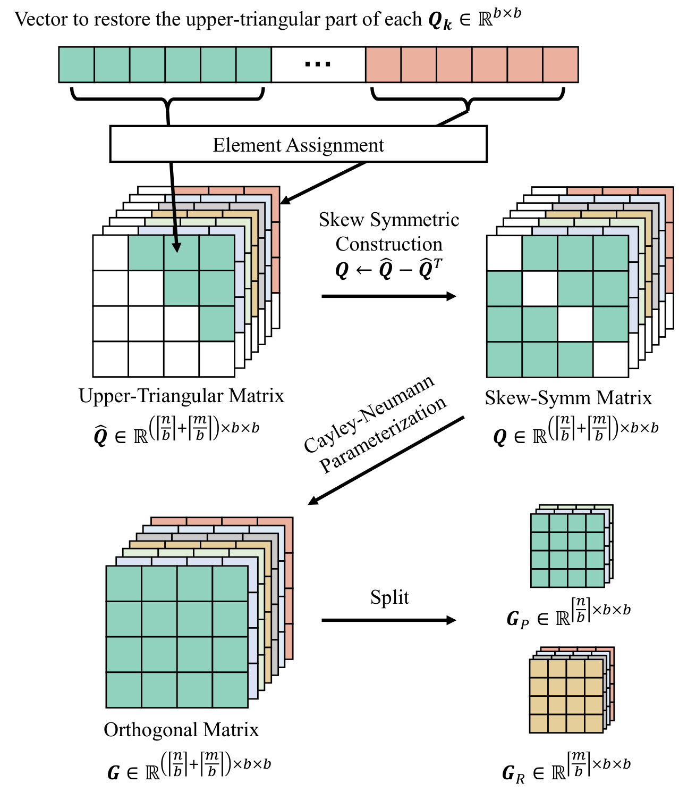

Efficient and stable training of large language models (LLMs) remains a core challenge in modern machine learning systems. To address this challenge, Reparameterized Orthogonal Equivalence Training (POET), a spectrum-preserving framework that optimizes each weight matrix through orthogonal equivalence transformation, has been proposed. Although POET provides strong training stability, its original implementation incurs high memory consumption and computational overhead due to intensive matrix multiplications. To overcome these limitations, we introduce POET-X, a scalable and memory-efficient variant that performs orthogonal equivalence transformations with significantly reduced computational cost. POET-X maintains the generalization and stability benefits of POET while achieving substantial improvements in throughput and memory efficiency. In our experiments, POET-X enables the pretraining of billion-parameter LLMs on a single Nvidia H100 GPU, and in contrast, standard optimizers such as AdamW run out of memory under the same settings.
The original POET struggles to scale beyond 3B parameters due to prohibitive memory and compute requirements. We quantitatively evaluate POET-X against POET and standard linear layers using Llama-8B settings to demonstrate its scalability.
Compared to POET, the combined forward and backward pass latency drops from 10.59ms to 1.38ms for POET-Xfast and 1.89ms for POET-Xmem. Relative to a highly optimized PyTorch linear layer (cuBLAS), POET-X incurs only modest overhead. Notably, POET-Xfast achieves backward-pass latency comparable to standard linear layers due to its high parameter efficiency.
We profiled memory consumption for training a Llama-8B model on a single GPU. While POET was intended to exhibit PEFT-like memory reduction, its original formulation is actually more memory-intensive than AdamW because it requires storing large transformed weight matrices (\(\mathbf{W}_{RP}\)) for backpropagation. In contrast, \(\text{POET-X}_{\text{fast}}\) and \(\text{POET-X}_{\text{mem}}\) both exhibit the reduced memory footprint characteristic of PEFT methods. By drastically lowering memory requirements for activations, gradients, and optimizer states, POET-X significantly enhances the scalability of orthogonal reparameterization for large-scale transformer pretraining.
We evaluated POET-X by pretraining a Llama-3B transformer on 60B tokens from the C4 dataset, following the Chinchilla scaling law of ~20 tokens per parameter. We benchmarked POET-X against AdamW, Muon (gradient orthogonalization), and memory-efficient baselines GaLore and APOLLO.
These results demonstrate that POET-X provides an optimal balance, delivering state-of-the-art training efficiency with a much smaller memory footprint than traditional second-order or orthogonal optimizers.

A primary advantage of POET-X is its seamless application to quantized base models. We evaluated POET-XQ by pretraining Llama-3B on 10B tokens, comparing it against GaLore and APOLLO.
POET-XQb=512 achieved the best validation perplexity of 14.78, outperforming both GaLore and APOLLO baselines.
POET-XQb=256 required the lowest overall training memory across all tested configurations.
By decoupling reparameterization from the quantized base weights, POET-XQ maintains compatibility with standard optimizers and can be effortlessly integrated into any quantized model architecture.

Beyond iteration-wise convergence, we evaluated wall-clock efficiency in a distributed environment (32× Nvidia H100 GPUs across 4 nodes via InfiniBand).
By enabling DDP where standard optimizers require FSDP, POET-X achieves significantly better practical wall-clock efficiency and robustness in large-scale distributed pretraining.


We systematically benchmarked peak GPU memory on a single Nvidia H100, varying model size (3B to 13B), sequence length (512 to 2048), and block size \(b\). We compared POET-X against AdamW, Muon, GaLore, APOLLO, and a parameter-matched LoRA baseline across both BF16 and INT8 quantized settings.
POET-Xfast matches the memory footprint of LoRA, while POET-Xmem outperforms all baselines (including LoRA) across every scale and configuration.
These results confirm that POET-X is the most memory-efficient framework for large-scale orthogonal reparameterization, effectively enabling the pretraining of 13B+ parameter models on single-node hardware.

The following table benchmarks the peak GPU memory usage on a single Nvidia H100 (Batch Size 1, no gradient accumulation). This comparison highlights the memory stability of POET-X as model size and sequence length increase.
We evaluated throughput scalability by varying model size, sequence length, and node count (scaling from 1 to 64 GPUs). For distributed training, POET-X and LoRA utilize Distributed Data Parallel (DDP), while AdamW employs a hybrid FSDP strategy.
While AdamW shows competitive performance on smaller configurations (Llama-8B at 512/1024 lengths), it encounters Out-of-Memory (OOM) errors as sequence length or model size increases. POET-X maintains stable execution across all tested scales.
As shown in our 64-GPU benchmarks, AdamW’s performance deviates from ideal linear scaling as node counts increase. This bottleneck is driven by:
all-reduce across all nodes at every step.all-gather and reduce-scatter operations further degrade throughput.In contrast, POET-X closely follows the ideal scaling curve. By drastically reducing the number of trainable parameters, it minimizes communication overhead, requiring only minimal collective operations to synchronize updates across the cluster.

Throughput (k tokens/s) across different numbers of GPUs. The solid line denotes the actual throughput, and the dashed line denotes the ideal linear scaling throughput. The ideal throughput of $k$ GPUs is defined as $T_{k, ideal}=T_{8,real}\times k /8$.

The table compares the throughput (k tokens/s) and scaling efficiency. The Scaling Ratio represents the throughput improvement when moving from a single H100 (1×1) to a 64-GPU cluster (8×8 H100).
POET reparameterizes each neuron as \(\mathbf{W}_{RP} = \mathbf{R}\mathbf{W}_0\mathbf{P}\), where \(\mathbf{W}_0 \in \mathbb{R}^{m \times n}\) is a fixed random weight matrix, and \(\mathbf{R} \in \mathbb{R}^{m \times m}\), \(\mathbf{P} \in \mathbb{R}^{n \times n}\) are trainable orthogonal matrices.
This formulation performs an orthogonal equivalence transformation (OET) on \(\mathbf{W}_0\), defined as \(\text{OET}(\mathbf{W}; \mathbf{R}, \mathbf{P}) = \mathbf{R}\mathbf{W}\mathbf{P}\), which multiplies \(\mathbf{W}\) by orthogonal matrices from both sides. The forward pass of POET is thus:
After training, \(\mathbf{R}\) and \(\mathbf{P}\) can be merged into \(\mathbf{W}_{RP}\), ensuring that POET-trained networks have no inference overhead.
In block-stochastic POET, the orthogonal matrix \(\mathbf{R}_i\) is parameterized as a block-diagonal structure with random permutations:
The weight-centric implementation incurs \(\mathcal{O}(nm^2)\) complexity. To solve this, we use an input-centric formulation:
The complete inference formula for one weight matrix is defined as:
where \(\mathbf{R}=\mathbf{\Phi}_m^\top\mathbf{G}_R\mathbf{\Phi}_m\) and \(\mathbf{P}=\mathbf{\Phi}_n^\top\mathbf{G}_P\mathbf{\Phi}_n\). To minimize memory overhead, we implement two core optimizations:
Instead of explicit matrix construction, we use a custom CUDA operator to implement index mapping. For permutations \(\pi_p\) and \(\pi_q\), we apply the following bijections:
By accessing weights in a prescribed order, this approach achieves up to 20× speedup in both forward and backward passes.
In the input-centric formulation, we merge two permutations directly into \(\mathbf{W}\) at the start of the inner loop:
Since \(\mathbf{W}\) remains fixed during the optimization of \(\mathbf{G}_P\) and \(\mathbf{G}_R\), pre-computing the permuted weights eliminates redundant calculations and significantly reduces total runtime.
In block-stochastic POET, orthogonal matrices utilize a sparse block-diagonal structure:
To avoid the overhead of constructing large sparse matrices, we observe that computations occur strictly within individual blocks. We propose a batch-parallel strategy that skips explicit matrix construction. Instead, each block is treated as an independent matrix in a batch, and we perform batch-wise matrix multiplications. This optimization significantly reduces GPU memory usage and improves runtime performance.
POET-X stores only the upper-triangular part of skew-symmetric matrices \(\mathbf{Q}\), halving the memory footprint. We use Triton for kernel fusion in the Cayley-Neumann expansion:
Compared to a naive PyTorch implementation that repeatedly reads \(\mathbf{Q}\) and \(\mathbf{Q}^2\) from slow global GPU memory for each term in \(\mathbf{G}\), our approach drastically reduces data transfer overhead. By leveraging kernel fusion, we load these tensors into low-latency shared memory only once.
Furthermore, fusing multiple tensor operations into a single custom kernel minimizes the number of PyTorch operator calls. This reduces CPU overhead by improving kernel launch times, leading to a more efficient execution pipeline for both forward and backward passes.
The backward pass is also fused using the following gradient derivation:

Illustration of efficient Cayley-Neumann parameterization (batch-wise implementation).
To simplify the memory analysis, we omit permutation matrices and express the forward pass as: \(\mathbf{z} = \mathbf{G}_P^\top \mathbf{W} \mathbf{G}_R^\top \mathbf{x}\). The process is executed via three sequential multiplications:
To enable the backward pass, the PyTorch Autograd Engine must save specific activations, which impacts peak memory:
We introduce two variants to balance the compute-memory trade-off:
Leveraging custom CUDA kernels for both forward and backward passes, POET-X readily supports quantized training. The core mechanism involves storing only the base model’s low-bit quantized weight matrices and dequantizing them on the fly. This ensures that high-precision weights are never stored in memory during the activation phase.
Consequently, POET-XQ is specifically implemented on POET-Xmem. In this configuration, intermediate activations are recomputed during the backward pass to save space. In contrast, POET-Xfast is less suitable for quantized training because it requires storing extra activation tensors, which would necessitate keeping high-precision weight matrices in memory.